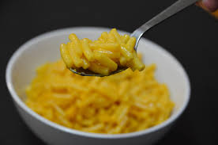

Macaroni and Cheese

Description
Cheesy and creamy elbow noodles
Ingredients
Box of Macaroni and Cheese
Water
2 tbs butter
1 cup milk
Steps
- Bring 1 quart of water to a boil in sauce pan
- Add macaroni noodles
- Cook for 10-15 minutes until noodles are soft
- Strain noodles and reduce heat to low
- Add noodles, butter, and milk to sauce pan, mix until creamy
- Turn off heat and let thicken for 5 minutes
- Serve